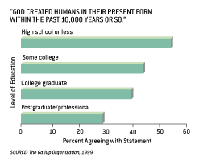

| Feature Article - July 2002 |
| by Do-While Jones |
Scientific American claims to have "15 Answers to Creationist Nonsense". But the answers, not the questions, are nonsense.
According to Scientific American, creationists use fifteen arguments that are "nonsense". We will look at all fifteen, in order, and see if they really are nonsense . This month we will examine the first seven, and next month we will look at the last eight.
The first argument creationists use, according to Scientific American, is
|
1. Evolution is only a theory. It is not a fact or a scientific law. 1 |
Serious creationists rarely, if ever, use this argument. We have been publishing this newsletter for almost six years. We invite you to look through all the back issues, and you will see we have never used it.
But some "casual creationists", who don't believe in evolution but don't really know why, sometimes do dismiss evolution because it is "just a theory." We saw the argument used once in a letter to the editor of our local newspaper. So, we really can't blame Scientific American for attacking this idea. Their argument is,
|
Many people learned in elementary school that a theory falls in the middle of a hierarchy of certainty--above a mere hypothesis but below a law. Scientists do not use the terms that way, however. 2 |
This is actually an indictment of the public school system. They should not be blaming creationists for this misunderstanding if it is what is taught in public schools.
One place where we have seen this "hierarchy of certainty" expressed is at the Chicago Field Museum of Natural History (which certainly isn't a cesspool of creationist propaganda). We told you about their "Facts, Theories, and Speculation" display in our December, 2001, newsletter. The Field Museum presents a theory as being somewhere between a fact and speculation on the continuum of certainty. So, blame the public schools, and blame the Field Museum, too, if you are going to blame creationists.
Usually, when evolutionists try to combat the "only a theory" argument, they drag gravity into it. They say Newton's theory of gravity is "just a theory, too." The difference between gravity and evolution, of course, is that one can do repeatable experiments to test the theory of gravity. Engineers can measure the amount of force it takes to stretch a spring a certain length. Then, they hang various masses from the spring and measure how far it stretches. From this they can determine the force of gravity pulling on the mass.
Furthermore, the theory of gravity made some interesting predictions. Astronomers noted that some of the outer planets did not orbit in the path one would expect. They calculated that some other gravitational force must be acting on them. From that they calculated where an unknown planet must be. They looked in that location and discovered Pluto. The theory of gravity predicted a planet of a particular size in a particular orbit, and it turned out to be a correct prediction.
The theory of evolution isn't like the theory of gravity. We have neither the time, talent, nor the material to build a lifeless planet just like Earth orbiting around a star just like the Sun to see if life will evolve on it after a few billion years. But we can perform some interesting experiments on a smaller scale. Many scientists have done experiments trying to find some way for lifeless chemicals to assemble themselves into living cells. Just as alchemists, after many failures, admitted that there isn't any way to turn lead into gold, evolutionists will someday have to admit that there isn't any way to turn brackish water into bacteria. In fact, those origin of life experiments have shown us some good reasons why chemicals can't come to life by purely natural processes.
Breeding experiments have shown that there are limits to how much artificial selection can modify a variety. There is every reason to believe that natural selection would have the same limits as artificial selection does. In fact, with what we now know about genes and information theory, we understand why those limits are there, and why mutation and natural selection can't cross them.
Unlike the theory of gravity, the theory of evolution doesn't have a lot of experimental confirmation to support it. In fact, the experimental evidence against evolution would certainly have caused the theory to have been rejected long ago, if it weren't for the religious implications that go along with it.
The theory of evolution doesn't have a very good record when it comes to prediction, either. Darwin said that the fossil record should show innumerable transitional forms. It doesn't. The "Cambrian explosion" of fossils is not what would be expected if the theory of evolution were true. Evolutionists first tried to explain away the scientific observations by saying that there were gaps in the fossil record. More recently, they have tried to explain it away with "punctuated equilibrium" (which we have discussed on several occasions, the most recent being last month).
If evolution were true, there would not be such clear divisions between classes, orders, and families. It should be really hard to decide if certain living creatures were reptiles or mammals because there should be innumerable living transitional forms.
So, serious creationists don't reject evolution because it is "only a theory." They reject it because it is a theory that is not consistent with modern scientific observation.
|
2. Natural selection is based on circular reasoning: the fittest are those who survive, and those who survive are deemed fittest. 3 |
Actually, we would say that statement is a tautology, which is a special case of circular reasoning because it is a self-defining relationship. It is "true by virtue of its logical form alone." 4
Scientific American is misrepresenting the creationist argument here because this isn't the circular reasoning that serious creationists usually attack. We attack the more subtle forms of circular reasoning, where the rocks are dated by the evolutionary ages of the fossils, and the evolutionary ages of the fossils are determined from the ages of the rocks containing them. We also love to point out that the type of radioactive dating used to determine the age of rocks is selected based on the presumed age of the rocks. Then, when the radioactive measurement gives the expected age, it is assumed to be correct, and all other radioactive "minority reports" are immediately destroyed to avoid the confusion and doubt that would certainly result.
Creationists generally don't have a problem with the definition of "survival of the fittest." Nor do they disagree with the minor, short-term effects that environmental pressure has on the survival of the various varieties of critters in general, and Darwin's finches in particular. Scientific American's second answer is an irrelevant rebuttal of a bogus argument.
Scientific American says creationists claim that,
|
3. Evolution is unscientific, because it is not testable or falsifiable. It makes claims about events that were not observed and can never be re-created. This blanket dismissal of evolution ignores important distinctions that divide the field into at least two broad areas: microevolution and macroevolution. Microevolution looks at changes within species over time--changes that may be preludes to speciation, the origin of new species. Macroevolution studies how taxonomic groups above the level of species change. Its evidence draws frequently from the fossil record and DNA comparisons to reconstruct how various organisms may be related. These days even most creationists acknowledge that microevolution has been upheld by tests in the laboratory (as in studies of cells, plants and fruit flies) and in the field (as in Grant's studies of evolving beak shapes among Galápagos finches). Natural selection and other mechanisms--such as chromosomal changes, symbiosis and hybridization--can drive profound changes in populations over time. 5 |
Well, evolution certainly does make "claims about events that were not observed and can never be re-created." But, in answer to their first statement, we have already discussed how some major concepts of the theory of evolution are testable and falsifiable. These parts fail because they make inaccurate predictions, or contradict repeatable observations.
Experiments regarding the origin of life have shown that life cannot have a purely natural origin. Breeding experiments do confirm microevolution, and also reveal why macroevolution cannot happen.
But some of the major claims of evolution, such as the claim that reptiles evolved into mammals, never have been observed, nor have they been repeated. Scientific American is just blowing smoke when it says, "Macroevolution studies how taxonomic groups above the level of species change. Its evidence draws frequently from the fossil record and DNA comparisons to reconstruct how various organisms may be related."
Reconstructions based on fossils and DNA are pure speculation, and often contradictory. The attempt to associate microevolution, for which there is abundant scientific evidence, with macroevolution, which is contradicted by so much scientific evidence, is shameless.
Scientific American says, "Natural selection and other mechanisms--such as chromosomal changes, symbiosis and hybridization--can drive profound changes in populations over time." This is a perfect example of what we discussed last month, in the article on "Individual Evolution". What does Scientific American mean by "profound changes in populations?" Since it is certainly true that natural selection, mutations, and cross breeding of different varieties of the same species can change the demographics of a population, their statement (with the possible exception of symbiosis) is true. But they aren't just talking about demographics. They no doubt are saying that an isolated population can turn into a population of an entirely new species, which is utterly false.
They are using a rhetorical trick which, in debate, is called "the fallacy of the middle term." For example, if Paul is taller than Jim, and Jim is taller than Dave, it must be true that Paul is taller than Dave because both are compared to Jim, which is a common middle term.
Given a term with two different meanings, an unethical person can establish that one meaning is true, then use the term as if the other meaning is true. The classic example is, "Nothing is better than complete happiness. Half a sandwich is better than nothing. Therefore, half a sandwich is better than complete happiness." The middle term, "nothing", has two different meanings. It is a fallacy of the middle term because although it appears there are three terms, there are actually four different terms which have been mapped to three different words, with two terms having different meanings for the same word.
Evolutionists use the term "evolution" to mean "a change in demographics" (which has been scientifically verified) in one breath, and then macroevolution in the next breath, and try to make you think that they are the same thing. They aren't. The change in demographics is the result of the increase or decrease in the number of individuals in the population who have certain previously existing genes. Macroevolution requires the creation of brand new genes. Even though both processes are called "evolution", they are entirely different processes.
The really amazing statement in their third answer to "creationist nonsense" is,
|
Evolution could be disproved in other ways, too. If we could document the spontaneous generation of just one complex life-form from inanimate matter, then at least a few creatures seen in the fossil record might have originated this way. If superintelligent aliens appeared and claimed credit for creating life on earth (or even particular species), the purely evolutionary explanation would be cast in doubt. But no one has yet produced such evidence. 6 |
They really shot themselves in their proverbial feet there! The point they are trying to make is that if there was any scientific evidence that inanimate matter came to life once, then inanimate matter might have come to life many times. If matter came to life many times, then there would not be one common ancestor, and each major biological group would have had a different origin. But since scientific experiments prove that inanimate matter cannot possibly come to life, they say, it must only have happened once!
The truth is that there is no documentation of spontaneous generation of even one complex life-form from inanimate matter because it has never happened--not even once. That refutes the theory of evolution (as it is taught in public schools) because it is "dead on arrival."
According to the grand theory of evolution, life began in a warm pond full of inanimate amino acids (or someplace very hot, or someplace very cold). Therefore, inanimate matter had to form something living that could reproduce offspring that natural selection could select from. But, as they point out, there is no evidence that this has ever happened.
(Of course, one superintelligent alien has appeared and claimed credit for creating life on earth, but we are just going to let their statement lie there without further comment.)
The most amusing part of the Scientific American article was their fourth point.
|
4. Increasingly, scientists doubt the truth of evolution. No evidence suggests that evolution is losing adherents. 7 |
Do you think they really believe that? If so, why did they publish an eight-page article defending evolution? They haven't published proof of the round earth. That's because scientists don't take the flat earth theory seriously. But they did have to try to defend the theory of evolution because it is losing adherents, even among scientists.
Their words and actions don't match. If evolution isn't losing adherents, what is all the big fuss about? They know that the theory of evolution really is losing adherents at an unprecedented rate. The editors of Scientific American said as much in the first three sentences of the editorial they wrote to introduce the feature article.
|
Preaching to the converted is unrewarding, so why should Scientific American publish an article about the errors of creationism [see page 78]? Surely this magazine's readers don't need to be convinced. Unfortunately, skepticism of evolution is more rampant than might be supposed. 8 |
Last month we told you that Eugenie C. Scott got this year's Public Service Award from the National Science Board. In her acceptance speech she said the award "highlights the importance of scientists taking the anti-evolution movement seriously."
|
Scientific American showed this graph on page 81. They didn't refer to it specifically in their article because they apparently thought it spoke for itself. We wonder what they think it said. Probably, they think it shows that highly educated people don't believe in young-earth creationism. |
 |
We think that it really shows that the longer evolutionists are allowed to brainwash students, the more successful they will be. But, even after at least 16 years of brainwashing, 40 percent of the people still won't believe the lie they are being taught. Almost 30 percent of the people with advanced degrees don't believe in evolution. If the theory of evolution were true, that number would be zero. It isn't zero because many well-educated people can see the bankruptcy of the theory of evolution, despite years of evolutionary indoctrination.
Don't let them tell you that they aren't scared! They are either panicking, or in denial, or both.
Their next point was,
|
5. The disagreements among even evolutionary biologists show how little solid science supports evolution. Evolutionary biologists passionately debate diverse topics: how speciation happens, the rates of evolutionary change, the ancestral relationships of birds and dinosaurs, whether Neandertals were a species apart from modern humans, and much more. These disputes are like those found in all other branches of science. Acceptance of evolution as a factual occurrence and a guiding principle is nonetheless universal in biology. 9 |
These disputes are NOT like those found in all other branches of science. For example, there was briefly a dispute about cold fusion, but it was quickly resolved because the experiments could not be reproduced, and the "excess heat" that was allegedly measured could be accounted for by experimental error.
There aren't even disputes like these in non-evolutionary biology. When was the last time you read a headline that said, "Biologists now say the liver, not the heart, actually pumps blood!" ?
The reason why there are debates about evolutionary topics is because the things being discussed are matters of opinion, not scientific facts. Somebody finds a part of a jaw and thinks it came from a human ancestor. A second scientist (who usually has also discovered a part of a jaw, which he claims came from a human ancestor) says the first scientist is wrong. There is more ego involved than evidence. Objectivity is distorted by the desire (perhaps even the need) to have bragging rights.
If there really was some solid evidence that one kind of species has ever turned into another kind of species, biologists would agree on it, just as they agree on the function of internal organs.
Scientific American also says in this section,
|
Yet creationists delight in dissecting out phrases from Gould's voluminous prose to make him sound as though he had doubted evolution ... 10 |
No, we don't think Gould doubted evolution. We do, however, point out that facts he himself presented did not support the conclusions he drew. He knew that the fossil record contained no transitional forms, or other evidence for evolution. That's why he came up with punctuated equilibrium. It was his rationalization of how evolution could be true, despite the fossil record as he knew it. Nobody would care if we said, "The extreme rarity of transitional forms in the fossil record persists as the trade secret of paleontology. The evolutionary trees that adorn our textbooks have data only at the tips and nodes of their branches; the rest is inference, however reasonable, not the evidence of fossils." 11 But the fact that he said it makes it worth quoting.
Scientific American goes on to say
|
.. and they [creationists] present punctuated equilibrium as though it allows new species to materialize overnight or birds to be born from reptile eggs. 12 |
Actually, Scientific American is confusing Goldschmidt's "hopeful monster theory" with Gould's theory of punctuated equilibrium. The hopeful monster theory is like punctuated equilibrium on steroids. Although the two theories differ in the amount of evolution that can take place in a single generation, both eventually have to confront the problem that a reptilian parent had to have had a mammalian child at some point for either theory to be true. According to either theory, something without a backbone gave birth to something that did. These are facts that evolutionists don't like to face.
|
6. If humans descended from monkeys, why are there still monkeys? This surprisingly common argument reflects several levels of ignorance about evolution. The first mistake is that evolution does not teach that humans descended from monkeys; it states that both have a common ancestor. 13 |
We have never heard a serious creationist make this argument. We invite you to search the back issues of our newsletter to verify for yourself that we have never used the argument. We don't think you will find it on the Answers In Genesis, or Institute For Creation Research web sites, either.
Ironically, children are often taught in public schools that people descended from monkeys. Students are likely to be confused by that and ask their teachers, "If humans descended from monkeys, why are there still monkeys? ". Again, the criticism should be leveled against the public school science curriculum, not creationists.
As Scientific American said, it is more accurate to say that the theory of evolution says that both humans and apes descended from a common UNKNOWN ancestor, the existence of which one must accept by faith.
|
7. Evolution cannot explain how life first appeared on earth. The origin of life remains very much a mystery, but biochemists have learned about how primitive nucleic acids, amino acids and other building blocks of life could have formed and organized themselves into self-replicating, self-sustaining units, laying the foundation for cellular biochemistry. 14 |
Evolution certainly cannot explain how life first appeared on Earth. The origin of life does remain very much a mystery. There is no nonsense there! But biochemists have NOT learned how primitive nucleic acids, amino acids and other building blocks of life could have formed and organized themselves into self-replicating, self-sustaining units, laying the foundation for cellular biochemistry. In fact, they now know many more reasons why chemicals can't spontaneously form something living than they did in the 1950's. The more they study the origin of life, the more apparent it is that life could not have formed spontaneously.
The hate mail we get often includes statements to the effect that we don't understand evolution because the theory of evolution says nothing about the origin of life. It is true that Darwinian evolution just attempts to explain how existing species change into other species, and says nothing about the origin of life. But, when we talk about evolution, we are talking about the theory of evolution as it is taught in the American public schools. American school children are taught that primitive nucleic acids, amino acids and other building blocks of life could have formed and organized themselves into self-replicating, self-sustaining units, laying the foundation for cellular biochemistry.
Many evolutionists want desperately to separate the origin of life from the origin of species because they know that spontaneous generation of life is impossible. But they really can't do that because the theory of evolution is supposed to explain how we got here without any supernatural activity creating life. They have to include the origin of life for it to explain how we got here.
The theory of evolution is quite literally, "dead on arrival." It begins with lifeless chemicals on a lifeless planet. Somehow the theory of evolution needs to get those lifeless chemicals to combine to form something living, which can be transformed by mutation and natural selection. It can't do it.
Ironically, in answer number 3 and answer number 7, Scientific American admitted that there isn't a single documented case of inanimate chemicals coming to life, and that the origin of life is a mystery. We are quoting them not to make it appear that they doubt evolution, but to show that they believe in evolution in spite of evidence they are fully aware of.
Unfortunately, we are out of space, so we will have to conclude this essay next month.
| Quick links to | |
|---|---|
| Science Against Evolution Home Page |
Back issues of Disclosure (our newsletter) |
| Web Site of the Month |
Topical Index |
Footnotes:
1
John Rennie, Scientific American, July 2002, "15 Answers to Creationist Nonsense", page 79, https://www.scientificamerican.com/article/15-answers-to-creationist/
(Ev+)
2
ibid. page 79
3
ibid. page 79
4
Webster's Ninth New Collegiate Dictionary
5
John Rennie, Scientific American, July 2002, "15 Answers to Creationist Nonsense", page 80, https://www.scientificamerican.com/article/15-answers-to-creationist/
(Ev+)
6
ibid. page 80
7
ibid. page 80
8
Scientific American, July 2002, "Bad Science and False Facts", page 10
9
John Rennie, Scientific American, July 2002, "15 Answers to Creationist Nonsense", page 81, https://www.scientificamerican.com/article/15-answers-to-creationist/
(Ev+)
10
ibid. page 81
11
Stephen Jay Gould, Natural History, vol. 86 (May 1977), "Evolution's Erratic Pace," page 14
(Ev+)
12
John Rennie, Scientific American, July 2002, "15 Answers to Creationist Nonsense", page 81, https://www.scientificamerican.com/article/15-answers-to-creationist/
(Ev+)
13
ibid. page 81
14
ibid. page 81